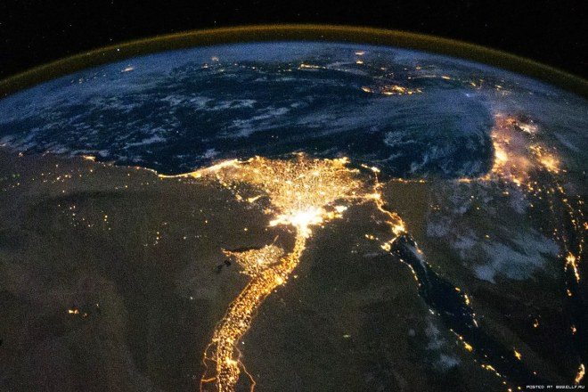
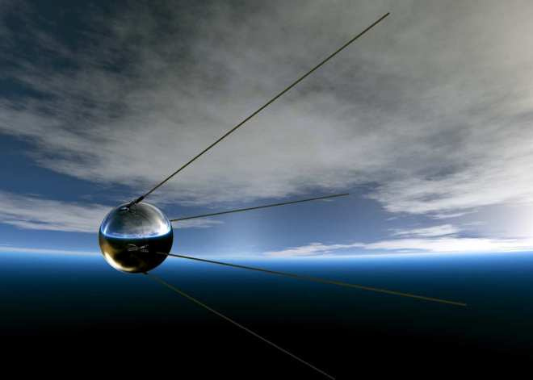
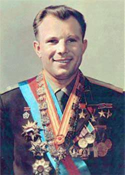
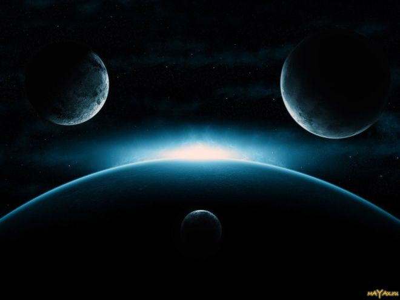
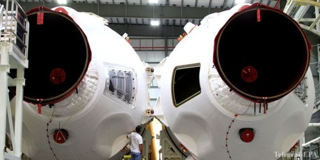

История освоения космоса — самый яркий пример торжества человеческого разума над непокорной материей в кратчайший срок. С того момента, как созданный руками человека объект впервые преодолел земное притяжение и развил достаточную скорость, чтобы выйти на орбиту Земли, прошло всего лишь чуть более пятидесяти лет — ничто по меркам истории! Большая часть населения планеты живо помнит времена, когда полёт на Луну считался чем-то из области фантастики, а мечтающих пронзить небесную высь признавали, в лучшем случае, неопасными для общества сумасшедшими. Сегодня же космические корабли не только «бороздят просторы», успешно маневрируя в условиях минимальной гравитации, но и доставляют на земную орбиту грузы, космонавтов и космических туристов. Более того — продолжительность полёта в космос ныне может составлять сколь угодно длительное время: вахта российских космонавтов на МКС, к примеру, длится по 6-7 месяцев. А ещё за прошедшие полвека человек успел походить по Луне и сфотографировать её тёмную сторону, осчастливил искусственными спутниками Марс, Юпитер, Сатурн и Меркурий, «узнал в лицо» отдалённые туманности с помощью телескопа «Хаббл» и всерьёз задумывается о колонизации Марса. И хотя вступить в контакт с инопланетянами и ангелами пока не удалось (во всяком случае, официально), не будем отчаиваться — ведь всё ещё только начинается!
Мечты о космосе и пробы пера
Впервые в реальность полёта к дальним мирам прогрессивное человечество поверило в конце 19 века. Именно тогда стало понятно, что если летательному аппарату придать нужную для преодоления гравитации скорость и сохранять её достаточное время, он сможет выйти за пределы земной атмосферы и закрепиться на орбите, подобно Луне, вращаясь вокруг Земли. Загвоздка была в двигателях. Существующие на тот момент экземпляры либо чрезвычайно мощно, но кратко «плевались» выбросами энергии, либо работали по принципу «ахнет, хряснет и пойдёт себе помаленьку». Первое больше подходило для бомб, второе — для телег. Вдобавок регулировать вектор тяги и тем самым влиять на траекторию движения аппарата было невозможно: вертикальный старт неизбежно вёл к её закруглению, и тело в результате валилось на землю, так и не достигнув космоса; горизонтальный же при таком выделении энергии грозил уничтожить вокруг всё живое (как если бы нынешнюю баллистическую ракету запустили плашмя). Наконец, в начале 20 века исследователи обратили внимание на ракетный двигатель, принцип действия которого был известен человечеству ещё с рубежа нашей эры: топливо сгорает в корпусе ракеты, одновременно облегчая её массу, а выделяемая энергия двигает ракету вперёд. Первую ракету, способную вывести объект за пределы земного притяжения, спроектировал Циолковский в 1903 году.
Первый искусственный спутник
Время шло, и хотя две мировые войны сильно замедлили процесс создания ракет для мирного использования, космический прогресс всё же не стоял на месте. Ключевой момент послевоенного времени — принятие так называемой пакетной схемы расположения ракет, применяемой в космонавтике и поныне. Её суть — в одновременном использовании нескольких ракет, размещённых симметрично по отношению к центру массы тела, которое требуется вывести на орбиту Земли. Таким образом обеспечивается мощная, устойчивая и равномерная тяга, достаточная, чтобы объект двигался с постоянной скоростью 7,9 км/с, необходимой для преодоления земного тяготения. И вот 4 октября 1957 года началась новая, а точнее первая, эра в освоении космоса — запуск первого искусственного спутника Земли, как всё гениальное названного просто «Спутник-1», с помощью ракеты Р-7, спроектированной под руководством Сергея Королёва. Силуэт Р-7, прародительницы всех последующих космических ракет, и сегодня узнаваем в суперсовременной ракете-носителе «Союз», успешно отправляющей на орбиту «грузовики» и «легковушки» с космонавтами и туристами на борту — те же четыре «ноги» пакетной схемы и красные сопла. Первый спутник был микроскопическим, чуть более полуметра в диаметре и весил всего 83 кг. Полный виток вокруг Земли он совершал за 96 минут. «Звёздная жизнь» железного пионера космонавтики продлилась три месяца, но за этот период он прошёл фантастический путь в 60 миллионов км!
Первые живые существа на орбите
Успех первого запуска окрылял конструкторов, и перспектива отправить в космос живое существо и вернуть его целым и невредимым уже не казалась неосуществимой. Всего через месяц после запуска «Спутника-1» на борту второго искусственного спутника Земли на орбиту отправилось первое животное — собака Лайка. Цель у неё была почётная, но грустная — проверить выживаемость живых существ в условиях космического полёта. Более того, возвращение собаки не планировалось… Запуск и вывод спутника на орбиту прошли успешно, но после четырёх витков вокруг Земли из-за ошибки в расчётах температура внутри аппарата чрезмерно поднялась, и Лайка погибла. Сам же спутник вращался в космосе ещё 5 месяцев, а затем потерял скорость и сгорел в плотных слоях атмосферы. Первыми лохматыми космонавтами, по возвращении приветствовавшими своих «отправителей» радостным лаем, стали хрестоматийные Белка и Стрелка, отправившиеся покорять небесные просторы на пятом спутнике в августе 1960 г. Их полёт длился чуть более суток, и за это время собаки успели облететь планету 17 раз. Всё это время за ними наблюдали с экранов мониторов в Центре управления полётами — кстати, именно по причине контрастности были выбраны белые собаки — ведь изображение тогда было чёрно-белым. По итогам запуска также был доработан и окончательно утверждён сам космический корабль — всего через 8 месяцев в аналогичном аппарате в космос отправится первый человек.
Помимо собак и до, и после 1961 г в космосе побывали обезьяны (макаки, беличьи обезьяны и шимпанзе), кошки, черепахи, а также всякая мелочь – мухи, жуки и т. д.
В этот же период СССР запустил первый искусственный спутник Солнца, станция «Луна-2» сумела мягко прилуниться на поверхность планеты, а также были получены первые фотографии невидимой с Земли стороны Луны.
День 12 апреля 1961 г. разделил историю освоения космических далей на два периода — «когда человек мечтал о звёздах» и «с тех пор, как человек покорил космос».
Человек в космосе
День 12 апреля 1961 г. разделил историю освоения космических далей на два периода — «когда человек мечтал о звёздах» и «с тех пор, как человек покорил космос». В 9:07 по московскому времени со стартовой площадки № 1 космодрома Байконур был запущен космический корабль «Восток-1» с первым в мире космонавтом на борту — Юрием Гагариным. Совершив один виток вокруг Земли и проделав путь в 41 тыс. км, спустя 90 минут после старта, Гагарин приземлился под Саратовом, став на долгие годы самым знаменитым, почитаемым и любимым человеком планеты. Его «поехали!» и «всё видно очень ясно — космос чёрный — земля голубая» вошли в список наиболее известных фраз человечества, его открытая улыбка, непринуждённость и радушие растопили сердца людей по всему миру. Первый полёт человека в космос управлялся с Земли, сам Гагарин являлся скорее пассажиром, хотя и великолепно подготовленным. Нужно отметить, что условия полёта были далеки от тех, что предлагаются ныне космическим туристам: Гагарин испытывал восьми-десятикратные перегрузки, был период, когда корабль буквально кувыркался, а за иллюминаторами горела обшивка и плавился металл. В течение полёта произошло несколько сбоев в различных системах корабля, но к счастью, космонавт не пострадал.
С тех пор каждое 12 апреля мы отмечаем День космонавтики.
Вслед за полётом Гагарина знаменательные вехи в истории освоения космоса посыпались одна за другой: был совершён первый в мире групповой космический полёт, затем в космос отправилась первая женщина-космонавт Валентина Терешкова (1963 г), состоялся полёт первого многоместного космического корабля, Алексей Леонов стал первым человеком, совершившим выход в открытый космос (1965 г) — и все эти грандиозные события — целиком заслуга отечественной космонавтики. Наконец, 21 июля 1969 г состоялась первая высадка человека на Луну: американец Нил Армстронг сделал тот самый «маленький-большой шаг».
Лучший вид в Солнечной системе
Космонавтика — сегодня, завтра и всегда
Сегодня путешествия в космос воспринимаются как нечто само собой разумеющееся. Над нами летают сотни спутников и тысячи прочих нужных и бесполезных объектов, за секунды до восхода солнца из окна спальни можно увидеть вспыхнувшие в ещё невидимых с земли лучах плоскости солнечных батарей Международной космической станции, космические туристы с завидной регулярностью отправляются «бороздить просторы» (тем самым воплощая в реальность ерническую фразу «если очень захотеть, можно в космос полететь») и вот-вот начнётся эра коммерческих суборбитальных полётов с чуть ли не двумя отправлениями ежедневно. Освоение космоса управляемыми аппаратами и вовсе поражает всякое воображение: тут и снимки давно взорвавшихся звёзд, и HD-изображения дальних галактик, и веские доказательства возможности существования жизни на других планетах. Корпорации-миллиардеры уже согласовывают планы по строительству на орбите Земли космических отелей, да и проекты колонизации соседних нам планет давно не кажутся отрывком из романов Азимова или Кларка. Очевидно одно: однажды преодолев земное тяготение, человечество будет вновь и вновь стремиться ввысь, к бесконечным мирам звёзд, галактик и вселенных. Хочется пожелать только, чтобы нас никогда не покидала красота ночного неба и мириадов мерцающих звёзд, по-прежнему манящих, таинственных и прекрасных, как в первые дни творения.
Космос раскрывает свои тайны
Академик Благонравов остановился на некоторых новых достижениях советской науки: в области физики космоса.
Начиная со 2 января 1959 года, при каждом полете советских космических ракет проводилось исследование излучений на больших расстояниях от Земли. Детальному изучению подвергся открытый советскими учеными так называемый внешний радиационный пояс Земли. Изучение состава частиц радиационных поясов с помощью различных сцинтилляционных и газоразрядных счетчиков, находившихся на спутниках и космических ракетах, позволило установить, что во внешнем поясе присутствуют электроны значительных энергий до миллиона электронвольт и даже выше. При торможении в оболочках космических кораблей они создают интенсивное пронизывающее рентгеновское излучение. При полете автоматической межпланетной станции в сторону Венеры была определена средняя энергия этого рентгеновского излучения на расстояниях от 30 до 40 тысяч километров от центра Земли, составляющая около 130 килоэлектронвольт. Эта величина мало изменялась с изменением расстояния, что позволяет судить о постоянном энергетическом спектре электронов в этой области.
Уже первые исследования показали нестабильность внешнего пояса радиации, перемещения максимума интенсивности, связанные с магнитными бурями, вызываемыми солнечными корпускулярными потоками. Последние измерения с автоматической межпланетной станции, запущенной в сторону Венеры, показали, что хотя ближе к Земле происходят изменения интенсивности, но наружная граница внешнего пояса при спокойном состоянии магнитного поля практически на протяжении двух лет оставалась постоянной как по интенсивности, так и по пространственному расположению. Исследования последних лет позволили также построить модель ионизованной газовой оболочки Земли на основе экспериментальных данных для периода, близкого к максимуму солнечной деятельности. Наши исследования показали, что на высотах меньше тысячи километров основную роль играют ионы атомарного кислорода, а начиная с высот, лежащих между одной и двумя тысячами километров, в ионосфере превалируют ионы водорода. Протяженность самой внешней области ионизованной газовой оболочки Земли, так называемой водородной «короны», весьма велика.
Обработка результатов измерений, проведенных на первых советских космических ракетах, показала, что на высотах примерно от 50 до 75 тысяч километров за пределами внешнего радиационного пояса обнаружены потоки электронов с энергиями, превышающими 200 электронвольт. Это позволило предположить существование третьего самого внешнего пояса заряженных частиц с большой интенсивностью потоков, но меньшей энергией. После пуска в марте 1960 года американской космической ракеты «Пионер V» были получены данные, которые подтвердили наши предположения о существовании третьего пояса заряженных частиц. Этот пояс, по-видимому, образуется в результате проникновения солнечных корпускулярных потоков в периферийные области магнитного поля Земли.

Были получены новые данные в отношении пространственного расположения радиационных поясов Земли, обнаружена область повышенной радиации в южной части Атлантического океана, что связано с соответствующей магнитной земной аномалией. В этом районе нижняя граница внутреннего радиационного пояса Земли опускается до 250 – 300 километров от поверхности Земли.
Полеты второго и третьего кораблей-спутников дали новые сведения, которые позволили составить карту распределения радиации по интенсивности ионов над поверхностью земного шара. (Докладчик демонстрирует эту карту перед слушателями).
Впервые токи, создаваемые положительными ионами, входящими в состав солнечного корпускулярного излучения, были зарегистрированы вне магнитного поля Земли на расстояниях порядка сотен тысяч километров от Земли, при помощи трехэлектродных ловушек заряженных частиц, установленных на советских космических ракетах. В частности, на автоматической межпланетной станции, запущенной по направлению к Венере, были установлены ловушки, ориентированные на Солнце, одна из которых предназначалась для регистрации солнечного корпускулярного излучения. 17 февраля, во время сеанса связи с автоматической межпланетной станцией, было зарегистрировано прохождение ее через значительный поток корпускул (с плотностью порядка 109 частиц на квадратный сантиметр в секунду). Это наблюдение совпало с наблюдением магнитной бури. Такие опыты открывают пути к установлению количественных соотношений между геомагнитными возмущениями и интенсивностью солнечных корпускулярных потоков. На втором и третьем кораблях-спутниках была изучена в количественном выражении радиационная опасность, вызываемая космическими излучениями за пределами земной атмосферы. Эти же спутники были использованы для исследования химического состава первичного космического излучения. Новая аппаратура, установленная на кораблях-спутниках, включала фотоэмульсионный прибор, предназначенный для экспонирования и проявления непосредственно на борту корабля стопки толстослойных эмульсий. Полученные результаты имеют большую научную ценность для выяснения биологического влияния космических излучений.
Технические проблемы полета
Далее докладчик остановился на ряде существенных проблем, обеспечивших организацию полета человека в космос. Прежде всего надо было решить вопрос о методах выведения на орбиту тяжелого корабля, для чего нужно было иметь мощную ракетную технику. Такая техника у нас создана. Однако недостаточно было сообщить кораблю скорость, превышающую первую космическую. Необходима была еще и высокая точность выведения корабля на заранее рассчитанную орбиту.
В качестве примеров маневра можно указать переход на более высоко лежащую орбиту, переход на орбиту, входящую в плотные слои атмосферы для торможения и посадки в заданном районе. Маневр последнего типа применялся при посадке советских кораблей-спутников с собаками на борту и при посадке корабля-спутника «Восток».
Для осуществления маневра, выполнения ряда измерений и для других целей необходимо обеспечить стабилизацию корабля-спутника и его ориентацию в пространстве, сохраняемую в течение определенного промежутка времени или изменяемую по заданной программе.
Переходя к проблеме возвращения на Землю, докладчик остановился на следующих вопросах: торможение скорости, защита от нагрева при движении в плотных слоях атмосферы, обеспечение приземления в заданном районе.
Торможение космического аппарата, необходимое для гашения космической скорости, может быть осуществлено либо с помощью специальной мощной двигательной установки, либо посредством торможения аппарата в атмосфере. Первый из этих способов требует весьма больших запасов веса. Использование сопротивления атмосферы для торможения позволяет обойтись сравнительно небольшими дополнительными весами.
Комплекс проблем, связанных с разработкой защитных покрытий при торможении аппарата в атмосфере и организацией процесса входа с приемлемыми для организма человека перегрузками, представляет собой сложную научно-техническую задачу.
Бурное развитие космической медицины поставило на повестку дня вопрос о биологической телеметрии как об основном средстве врачебного контроля и научного медицинского исследования во время космического полета. Использование радиотелеметрии накладывает специфический отпечаток на методику и технику медико-биологических исследований, поскольку к аппаратуре, размещаемой на борту космических кораблей, предъявляется ряд специальных требований. Эта аппаратура должна иметь очень небольшой вес, малые габариты. Она должна быть рассчитана на минимальное энергопотребление. Кроме того, бортовая аппаратура должна устойчиво работать на активном участке и при спуске, когда действуют вибрации и перегрузки.
Датчики, предназначенные для преобразования физиологических параметров в электрические сигналы, должны быть миниатюрными, рассчитанными на длительную работу. Они не должны создавать неудобств космонавту.
Широкое применение радиотелеметрии в космической медицине заставляет исследователей обратить серьезное внимание на конструирование такой аппаратуры, а также на согласование объема необходимой для передачи информации с емкостью радиоканалов. Поскольку новые задачи, стоящие перед космической медициной, приведут к дальнейшему углублению исследований, к необходимости значительного увеличения количества регистрируемых параметров, потребуется внедрение систем, запоминающих информации, и методов кодирования.
В заключение докладчик остановился на вопросе о том, почему для первого космического путешествия был выбран именно вариант облета Земли по орбите. Этот вариант представлял собою решительный шаг к завоеванию космического пространства. Им обеспечивалось исследование вопроса о влиянии длительности полета на человека, решалась задача управляемого полета, задача управления спуском, вхождения в плотные слои атмосферы и благополучного возвращения на Землю. По сравнению с этим полет, осуществленный недавно в США, представляется малоценным. Он мог иметь значение как промежуточный вариант для проверки состояния человека при этапе набора скорости, при перегрузках во время спуска; но после полета Ю. Гагарина в такой проверке уже не было надобности. В этом варианте эксперимента безусловно преобладал элемент сенсации. Единственную ценность этого полета можно видеть в проверке действия разработанных систем, обеспечивающих вхождение в атмосферу и приземление, но, как мы видели, проверка подобных систем, разработанных у нас в Советском Союзе для более сложных условий, была надежно осуществлена еще ранее первого космического полета человека. Таким образом, ни в какое сравнение не могут быть поставлены достижения, полученные у нас 12 апреля 1961 г., с тем, что до настоящего времени оказалось достигнуто в США.
И как бы ни старались, говорит академик, враждебно настроенные по отношению к Советскому Союзу люди за рубежом своими измышлениями умалить успехи нашей науки и техники, весь мир оценивает эти успехи должным образом и видит, насколько вырвалась наша страна вперед по пути технического прогресса. Я лично был свидетелем того восторга и восхищения, которые были вызваны известием об историческом полете нашего первого космонавта среди широких масс итальянского народа.
Полет прошел исключительно успешно
Доклад о биологических проблемах космических полетов сделал академик Н. М. Сисакян. Он охарактеризовал основные этапы развития космической биологии и подвел некоторые итоги научных биологических исследований, связанных с космическими полетами.
Докладчик привел медико-биологические характеристики полета Ю. А. Гагарина. В кабине поддерживалось барометрическое давление в пределах 750 – 770 миллиметров ртутного столба, температура воздуха – 19 – 22 градуса Цельсия, относительная влажность – 62 – 71 процент.
В предстартовом периоде, примерно за 30 минут до старта космического корабля, частота сердечных сокращений составила 66 в минуту, частота дыхания – 24. За три минуты до старта некоторое эмоциональное напряжение проявилось в увеличении частоты пульса до 109 ударов в минуту, дыхание продолжало оставаться ровным и спокойным.
В момент старта корабля и постепенного набора скорости частота сердцебиения возросла до 140 – 158 в минуту, частота дыхания составляла 20 – 26. Изменения физиологических показателей на активном участке полета, по данным телеметрической записи электрокардиограмм и пнеймограмм, были в допустимых пределах. К концу активного участка частота сердечных сокращений составила уже 109, а дыхания – 18 в минуту. Иными словами, эти показатели достигли значений, характерных для ближайшего к старту момента.
При переходе к невесомости и полете в этом состоянии показатели сердечно-сосудистой и дыхательной систем последовательно приближались к исходным значениям. Так, уже на десятой минуте невесомости частота пульса достигла 97 ударов в минуту, дыхания – 22. Работоспособность не нарушилась, движения сохранили координацию и необходимую точность.
На участке спуска, при торможении аппарата, когда вновь возникали перегрузки, были отмечены кратковременные, быстро преходящие периоды учащения дыхания. Однако уже при подходе к Земле дыхание стало ровным, спокойным, с частотой около 16 в минуту.
Через три часа после приземления частота сердечных сокращений составляла 68, дыхание – 20 в минуту, т. е. величины, характерные для спокойного, нормального состояния Ю. А. Гагарина.
Все это свидетельствует о том, что полет прошел исключительно успешно, самочувствие и общее состояние космонавта на всех участках полета было удовлетворительным. Системы жизнеобеспечения работали нормально.
В заключение докладчик остановился на важнейших очередных проблемах космической биологии.